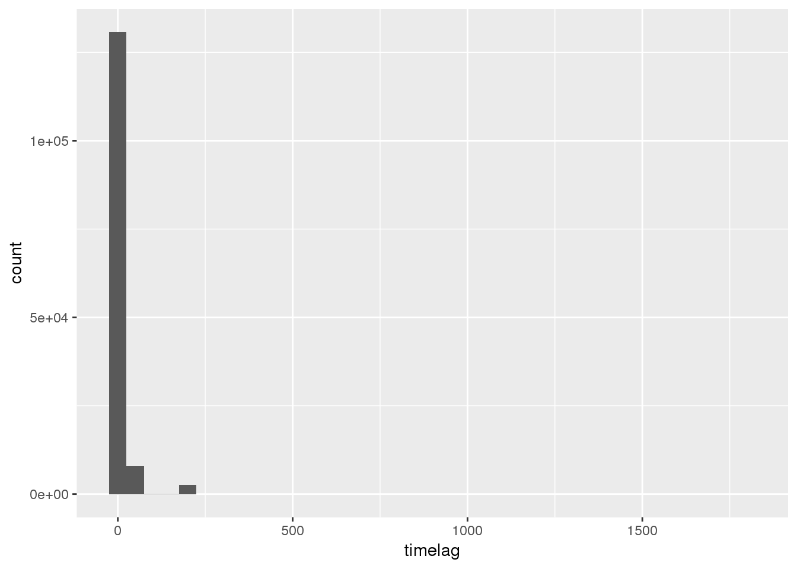
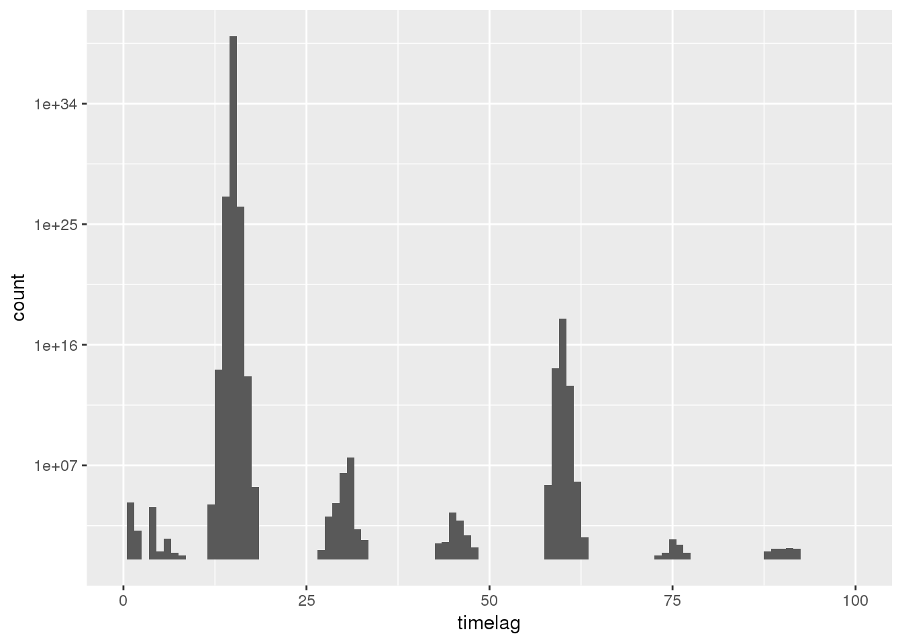
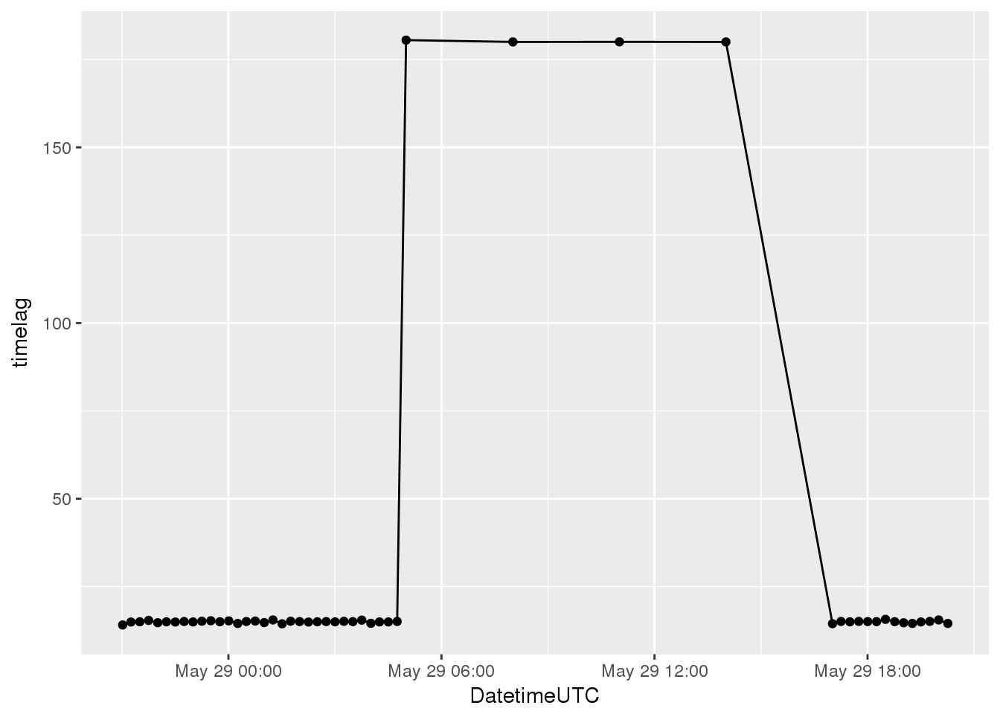
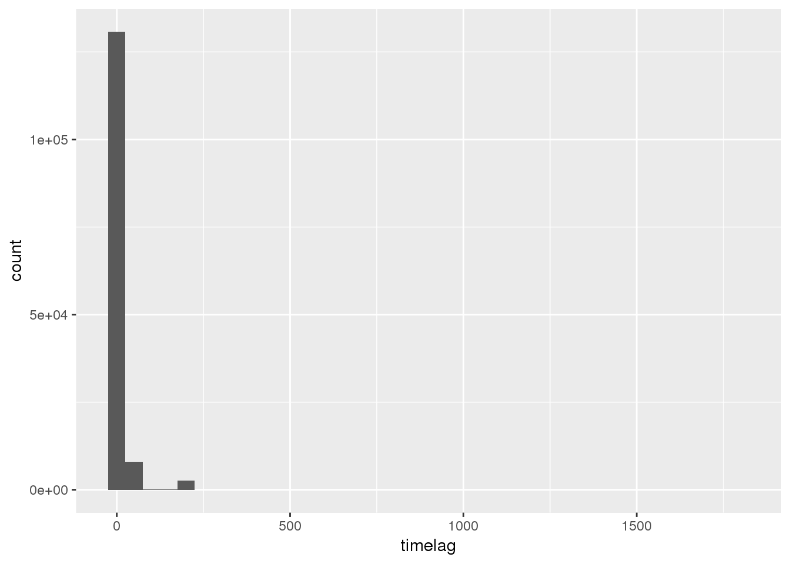
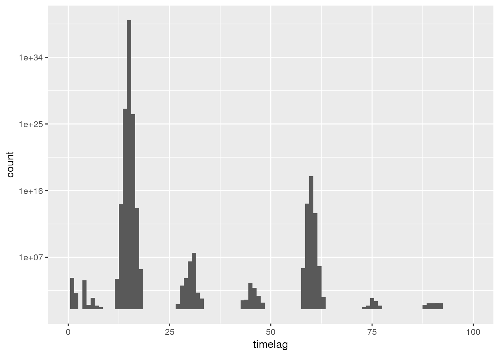
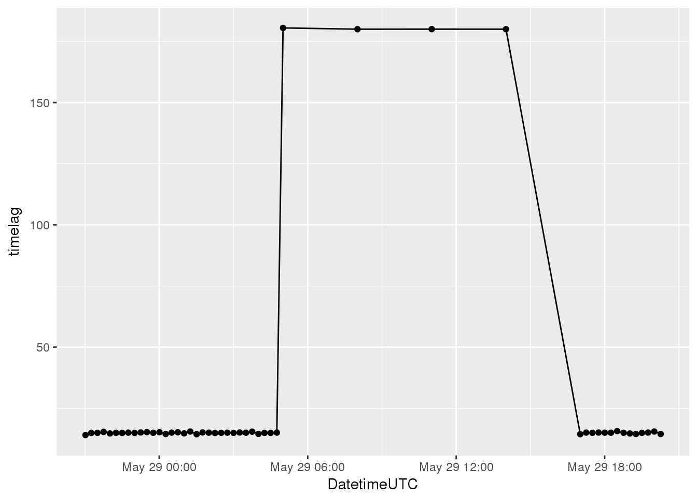
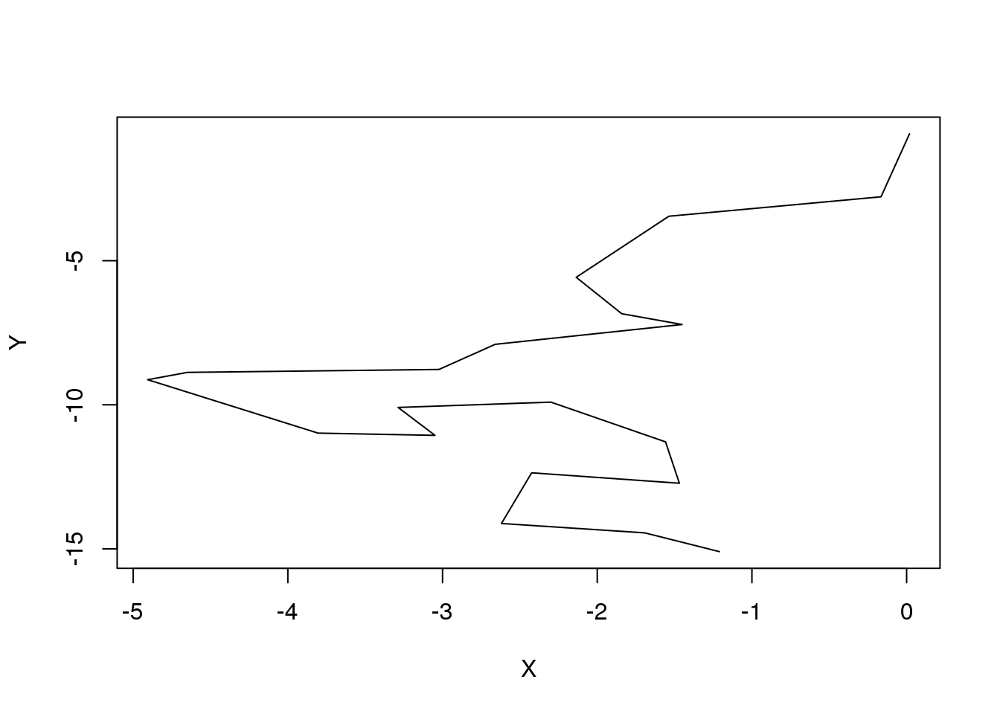

Exercise 2
Learning Outcomes
Prerequisites
Readings Skills from “R for Data Science” (Wickham and Grolemund 2017):
- RS2.1 Chap3 Data Transformation with
dplyr(31p, 43-76) - RS2.2 Chap10 Relational data with
dplyr(21p, 171-193) - RS2.3 Chap14 Pipes with
magrittr(6p, 261-268)
Readings Theory
- R2.1 Laube and Purves (2011): How fast is a cow? cross - scale analysis of movement data.
Preperation
Open your R Project from last week. Load all libraries and run the script to import and clean your data.
Tasks and Inputs
Input 1: Using dpyr for data wrangling
Depending on your knowledge of R, getting an overview of the data we imported last week might have been quite a challenge. Quite surprisingly, importing, cleaning and exploring your data can be the most challenging, time consuming part of a project. RStudio and the tidyverse offer many helpful tools to make this part easier (and more fun). You have read chapters on dplyr and magrittr as preparation for this Exercise. In the next task, we will use these tools (dplyr, group_by, summarise) to get an overview of the data. Let’s start with an example to illustrate the concept:
To calculate the timelag in between subsequent positions, we can use the function difftime() combined with lead() from dplyr. Wihout muatate(), the code looks something like this:
wildschwein_BE$timelag <- difftime(lead(wildschwein_BE$DatetimeUTC),wildschwein_BE$DatetimeUTC)We mention wildschwein_BE three times in this function, which is why we can use summarise():
wildschwein_BE <- wildschwein_BE %>%
mutate(
timelag = difftime(lead(DatetimeUTC),DatetimeUTC)
)
With the code above, we did not consider that timelag should just be calculated between subsequent rows of the same individual. We can implement this by using group_by(). In addition, we can specify units = to ensure we’re getting the time difference in the units we prefer, and as.numeric() to turn the difftime() object into a numeric value (which is easier to plot etc.).
Task 1: Getting an Overview
Try to answer the following questions:
- How many individuals were tracked?
- How long were the individual tracked? Are there gaps?
- Were all individuals tracked concurrently or sequentially?
- What is the temporal sampling interval between the locations?
Here are some sample visualisation that help answer these questions:  

Input 2: Grouping by intervals
For the next Task, we will need a function to split a continuous variable into specific intervals. For this, the function cut()is very handy. Let’s introduce this function with a quick example. Take an a series of number that represent the age of ten different people.
ages <- c(20,25,18,13,53,50,23,43,68,40)Let’s say we want to split this into equal intervals of 10
breaks <- seq(0,50,10)
cut(ages,breaks = breaks)
## [1] (10,20] (20,30] (10,20] (10,20] <NA> (40,50] (20,30] (40,50]
## [9] <NA> (30,40]
## Levels: (0,10] (10,20] (20,30] (30,40] (40,50]Note:
- If a number does not fit within an interval defined by
breaks =,cut()will returnNA. - The default
labelswith(and]might seem a little ugly and puzzling at first, but in fact they are a standard form of notating intervals in mathematics - If you don’t like
(and], you can specify your own labels with the argumentlabels =(see below)
cut(ages, breaks = c(0,30,60,100), labels = c("young","middle aged","old"))
## [1] young young young young middle aged
## [6] middle aged young middle aged old middle aged
## Levels: young middle aged oldTask 2: Making groups by sampling Interval
Now that we’ve established that we have different sampling intervals (Task 1), we have to segment our trajectories in such a way, that we can perform further analysis during specific sampling intervals only. If we measure speed, or turning angles, we have to be very clear on what temporal (an thus spatial) scale we are performing this analysis.
We therefore have to define threshold to group segments with a similar sampling interval. Explore the dataset in more detail (e.g. using histograms at different scales), and choose reasonable threshold values to group the trajectories into different sampling intervals.
Note:
- It might make more sense to choose narrow group intervals at smaller time lags and wider groups intervals at higher time lags.
- Store the group names in a new column named
samplingInt
Input 3: Geometry as columns
Last week, we transformed our data from a data.frame to an sf object. This turned our Lat/Long Columns into a single geometry (list) column. While this is very handy for many spatial operations, accessing the coordinates directly becomes difficult. We therefore advised storing the information twice, once as a geometry and once as a numeric value. We did this for the values in WGS84, but yet for the CH1903+ LV95.
wildschwein_BE
## Simple feature collection with 141763 features and 8 fields
## geometry type: POINT
## dimension: XY
## bbox: xmin: 2568153 ymin: 1201483 xmax: 2577023 ymax: 1207609
## epsg (SRID): 2056
## proj4string: +proj=somerc +lat_0=46.95240555555556 +lon_0=7.439583333333333 +k_0=1 +x_0=2600000 +y_0=1200000 +ellps=bessel +towgs84=674.374,15.056,405.346,0,0,0,0 +units=m +no_defs
## # A tibble: 141,763 x 9
## # Groups: TierID [10]
## TierID TierName CollarID DatetimeUTC Lat Long timelag
## <chr> <chr> <int> <dttm> <dbl> <dbl> <dbl>
## 1 001A Ueli 12272 2014-05-28 21:01:14 47.0 7.05 14.1
## 2 001A Ueli 12272 2014-05-28 21:15:18 47.0 7.05 14.9
## 3 001A Ueli 12272 2014-05-28 21:30:13 47.0 7.05 15.0
## 4 001A Ueli 12272 2014-05-28 21:45:11 47.0 7.05 15.4
## 5 001A Ueli 12272 2014-05-28 22:00:33 47.0 7.05 14.7
## 6 001A Ueli 12272 2014-05-28 22:15:16 47.0 7.05 15.0
## 7 001A Ueli 12272 2014-05-28 22:30:14 47.0 7.05 14.9
## 8 001A Ueli 12272 2014-05-28 22:45:09 47.0 7.05 15.0
## 9 001A Ueli 12272 2014-05-28 23:00:12 47.0 7.05 14.9
## 10 001A Ueli 12272 2014-05-28 23:15:08 47.0 7.05 15.1
## # ... with 141,753 more rows, and 2 more variables: samplingInt <fct>,
## # geometry <POINT [m]>Let’s do the same for the CH1903+ LV95-Value, we will need the values in columns for our next task. First, we have to extract the Coordinates using st_coordinates(). We can store these values in a new variable and display them:
# Store coordinates in a new variable
coordinates <- st_coordinates(wildschwein_BE)
head(coordinates)
## X Y
## 1 2570390 1204820
## 2 2570389 1204826
## 3 2570391 1204821
## 4 2570388 1204826
## 5 2570388 1204819
## 6 2570384 1204828Note that that the column are named X and Y, while CH1903+ LV95 names the Axes E and N: let’s rename the columns appropriately. After this, we can use cbind() to “glue” the columns to our original sf-object.
colnames(coordinates) <- c("E","N")
wildschwein_BE <- cbind(wildschwein_BE,coordinates)Task 3: Euclidean Distance and Speed
In this task we will calculate the animal’s speed based on the distance and timelag in between locations. Since we have
- If you’re working with dplyr, you can add
samplingInttogroup_by()(in addition to TierID) and so make sure you’re not calculating speed across different sampling intervals. - You can use the function
euclid()from theCMAtoolspackage to calculate Euclidean distances between subsequent rows. Use ?euclid to see what the function expects and returns. - use
lead(E,1)to address the the rown+1 - make sure you’re clear in what unit you are measuring speed. Meters per second is a SI base unit, but might be unhandy for the speeds travelled by wild boar.
Task 4: Rolling window functions
Measuring speed between subsequent samples is great, but especially for short sampling intervals they can be misleading due to measurement error. It might be desirable to smoothen these errors using a moving window function. The zoo package offers a variate of moving window functions (roll*). Use roll_mean() to smooth the calculated speed. Familiarise yourself with this function by working on some dummy data, for example:
{kind=link}
library(zoo)
example <- rnorm(10)
rollmean(example,k = 3,fill = NA,align = "left")
rollmean(example,k = 4,fill = NA,align = "left")Visualize the output from your moving windows and compare different window sizes (k =).
Task 5: Segmenting methods
You’ve read Laube and Purves (2011) about segmenting trajectories. In the paper, they define “static” fixes as “those whose average Euclidean distance to other fixes inside a temporal window v* is less than some threshold *d**“. This sounds more complicated than it is, the figure illustrates the method nicely.
Try to implement this method on some dummy data. Once you’ve solved the problem on this simple data, we will implement it on the wild boar data next week.
set.seed(10)
X = cumsum(rnorm(20))
Y = cumsum(rnorm(20))
plot(X,Y, type = "l")
Assume the sampling interval is 5 minutes. If we take a temporal window of 20 minutes, that would mean we include 5 fixes into the calculation. We need to calculate the following Euclidean distances (pos representing a X,Y-position):
- pos[n-2] to pos[n]
- pos[n-1] to pos[n]
- pos[n] to pos[n+1]
- pos[n] to pos[n+2]
You can use the function euclid() to calculate the distances and dplyr functions lead()/``lag() to create the necessary offsets. On our dummy data, we want to calculate the mean of the following distances (red, dotted lines).

Solutions (RCode)
# install.packages("zoo")
#
# devtools::install_git("https://github.engineering.zhaw.ch/PatternsTrendsEnvironmentalData/CMAtools.git")
## wildschwein_BE$timelag <- difftime(lead(wildschwein_BE$DatetimeUTC),wildschwein_BE$DatetimeUTC)
## wildschwein_BE <- wildschwein_BE %>%
## mutate(
## timelag = difftime(lead(DatetimeUTC),DatetimeUTC)
## )
##
wildschwein_BE <- wildschwein_BE %>%
group_by(TierID) %>%
mutate(
timelag = difftime(lead(DatetimeUTC),DatetimeUTC,units = "mins"),
timelag = as.numeric(timelag)
)
## Task 1 ####################
ggplot(wildschwein_BE, aes(DatetimeUTC,TierID)) +
geom_line()
ggplot(wildschwein_BE, aes(timelag)) +
geom_histogram(binwidth = 50)
ggplot(wildschwein_BE, aes(timelag)) +
geom_histogram(binwidth = 1) +
lims(x = c(0,100)) +
scale_y_log10()
wildschwein_BE[1:50,] %>%
ggplot(aes(DatetimeUTC,timelag)) +
geom_line() +
geom_point()
ages <- c(20,25,18,13,53,50,23,43,68,40)
breaks <- seq(0,50,10)
cut(ages,breaks = breaks)
cut(ages, breaks = c(0,30,60,100), labels = c("young","middle aged","old"))
## Task 2 ####################
ggplot(wildschwein_BE, aes(timelag)) +
geom_histogram(binwidth = 0.1) +
scale_x_continuous(breaks = seq(0,400,20),limits = c(0,400)) +
# scale_x_continuous(breaks = seq(0,50,1),limits = c(0,50)) +
scale_y_log10()
wildschwein_BE <- wildschwein_BE %>%
group_by(TierID) %>%
mutate(
samplingInt = cut(timelag,breaks = c(0,5,seq(10,195,15)))
)
wildschwein_BE %>%
group_by(samplingInt) %>%
summarise(
n = n()
) %>%
ggplot(aes(samplingInt,n)) +
geom_bar(stat = "identity") +
theme(axis.text.x = element_text(angle = 45, hjust = 1)) +
scale_y_log10()
wildschwein_BE
# Store coordinates in a new variable
coordinates <- st_coordinates(wildschwein_BE)
head(coordinates)
colnames(coordinates) <- c("E","N")
wildschwein_BE <- cbind(wildschwein_BE,coordinates)
## Task 3 ####################
library(CMAtools)
wildschwein_BE <- wildschwein_BE %>%
group_by(TierID,samplingInt) %>%
mutate(
steplength = euclid(lead(E),lead(N),E,N),
speed = steplength/timelag
)
library(zoo)
example <- rnorm(10)
rollmean(example,k = 3,fill = NA,align = "left")
rollmean(example,k = 4,fill = NA,align = "left")
## Task 4 ####################
wildschwein_BE <- wildschwein_BE %>%
group_by(TierID) %>%
mutate(
speed2 = rollmean(speed,3,NA,align = "left"),
speed3 = rollmean(speed,5,NA,align = "left"),
speed4 = rollmean(speed,10,NA,align = "left")
)
wildschwein_BE[1:30,] %>%
gather(key,val,c(speed,speed2,speed3,speed4)) %>%
ggplot(aes(DatetimeUTC,val,colour = key,group = key)) +
geom_point() +
geom_line()
## Task 5 ####################
nMinus2 <- euclid(lag(X, 2),lag(Y, 2),X,Y) # distance to pos. -10 minutes
nMinus1 <- euclid(lag(X, 1),lag(Y, 1),X,Y) # distance to pos. -5 minutes
nPlus1 <- euclid(X,Y,lead(X, 1),lead(Y, 1)) # distance to pos +5 mintues
nPlus2 <- euclid(X,Y,lead(X, 2),lead(Y, 2)) # distance to pos +10 minutes
# Use cbind to bind all rows to a matrix
distances <- cbind(nMinus2,nMinus1,nPlus1,nPlus2)
distances
# This just gives us the overall mean
mean(distances, na.rm = T)
# We therefore need the function `rowMeans()`
rowmeans <- rowMeans(distances)
cbind(distances,rowmeans)
# and if we put it all together:
rowMeans(
cbind(
euclid(lag(X, 2),lag(Y, 2),X,Y),
euclid(lag(X, 1),lag(Y, 1),X,Y),
euclid(X,Y,lead(X, 1),lead(Y, 1)),
euclid(X,Y,lead(X, 2),lead(Y, 2))
)
)
## NA